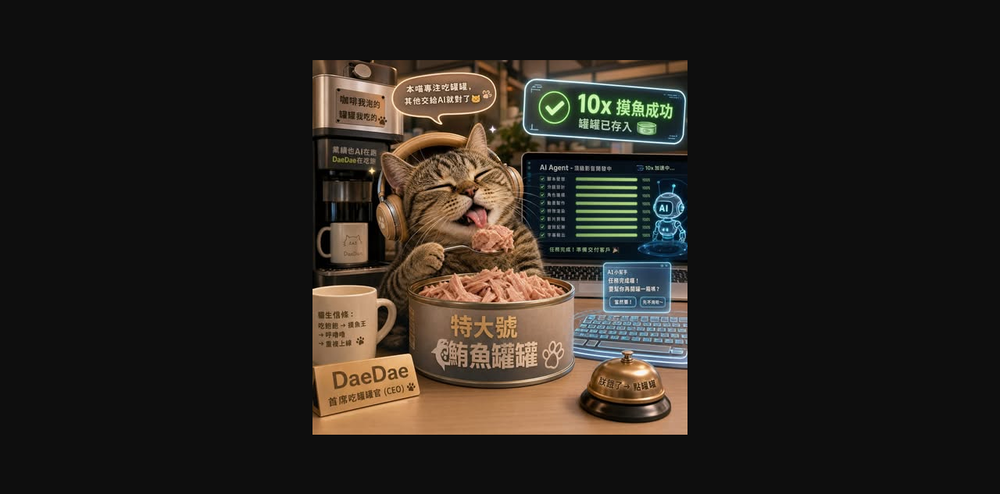

Threads｜AI熱搜報：Drama.Land AI 音樂影片生成與「幾秒搞定 MV」敘事查核

AI熱搜報（@ai.resoubao2026）在 Threads 分享「肉球筆記 1」：Drama.Land 發布 AI 音樂影片生成技術，貼文主張可快速生成視覺與聽覺並重的音樂短片、工具直覺、並透過優惠碼領免費點數。
可見來源重點
Threads 可見文字將 Drama.Land 包裝成三點：
- 用 AI 快速生成音樂短片，兼顧視覺與聽覺。
- 操作直覺，能做出較有張力的作品。
- 新手可透過優惠碼/免費點數降低試用門檻。
貼文中的「幾秒鐘搞定高品質 MV」「躺平賺罐罐」屬社群行銷語與迷因比喻，不應解讀為穩定商業收益或完全無需人工製作。
圖片描述
保存的圖片是 Threads 可見主圖截圖：畫面中央有戴耳機的虎斑貓，正在吃「特大號鮪魚罐罐」；背景是帶有 AI Agent、交易成功提示與「10x 換魚成功」等 UI 的趣味場景。整張圖更像 AI 生成的品牌/角色化 MV 宣傳畫面，而不是可驗證的完整影片製作流程截圖。
官方來源查核
Drama.Land 官方首頁將自己定位為 AI Music Video Generator & Storytelling Video Platform，描述可把歌曲變成 cinematic music videos，並建立有一致角色與風格的 serialized story content。官方 FAQ 也將產品描述為 all-in-one AI music video creation platform，用於把 ideas 變成 finished / publish-ready music videos。
這能支持「Drama.Land 是 AI 音樂影片與故事化影片生成工具」的核心方向；但 Threads 貼文中關於生成速度、作品品質與免費點數條件，仍需以當下官網帳號介面、方案限制與實際輸出測試為準。
對 AI 學習雷達的意義
這則適合放在 AI 影片生成與自媒體工作流觀察中：音樂影片工具正在從單張圖或單段 video clip，往「音樂、角色、節奏、字幕、場景與故事線」整合。若要用在課程，可讓學員比較兩種 prompt：
- 只描述畫面：貓咪在錄音室唱歌。
- 描述 MV 結構：角色設定、歌曲情緒、段落起承轉合、鏡頭節奏、字幕與品牌識別。
風險與限制
- 音樂、歌詞、聲音、肖像與角色素材需要確認授權。
- AI 影片常有角色漂移、節奏錯位、口型不準與畫面瑕疵，不能只看封面判斷品質。
- 免費點數、優惠碼與方案限制會變動，需以官方帳號介面為準。
- 若用於商業發布，仍需要人工審片、素材來源紀錄與 AI 合成標示。